Shell Themes
The VIP Shell supports customization of the appearance of history list items
through the use of themes and theme text colors. You customize your history
list’s appearance by:
- Selecting a theme using the shell options dialog. The Theme option on the
dialog’s Options tab allows to you to select from the available themes
provided with the shell. You can also press the 4 key when hovering your
mouse pointer over a history item to cycle to the next available theme.
- Optionally customize the text colors for your selected theme using the
Theme Colors tab of the shell options dialog.
Refer to the Shell Options section for more information on using the
shell options dialog.
The remainder of this section is devoted to providing graphical illustrations of
each of the standard shell themes.
All Black
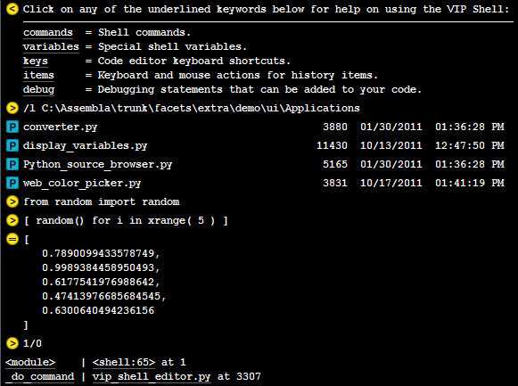
All White
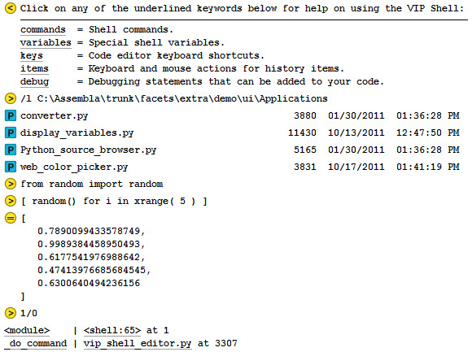
Bee
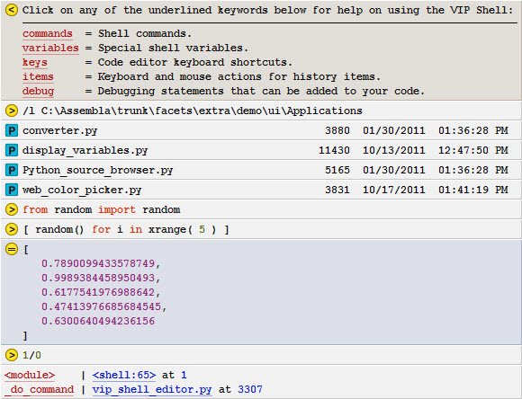
Core: Thor
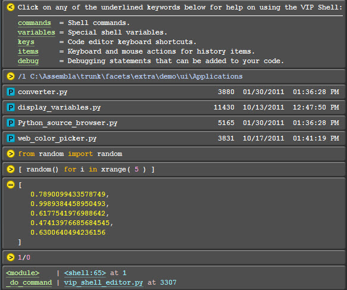
Dark
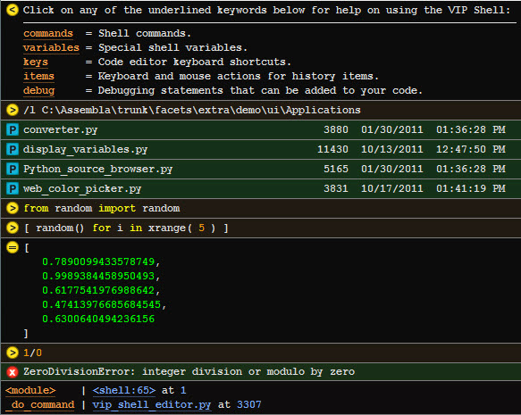
Default
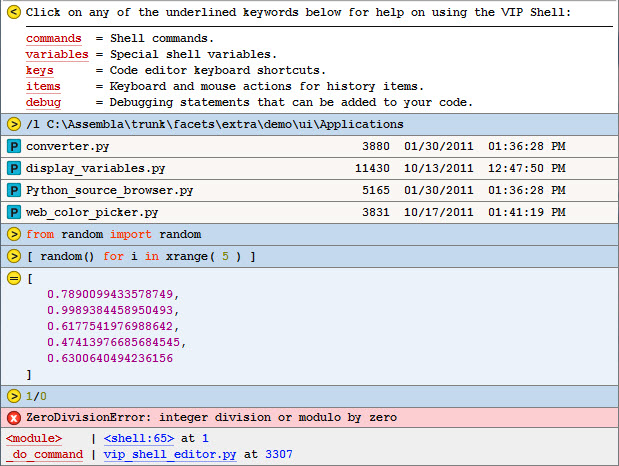
Grey 3D
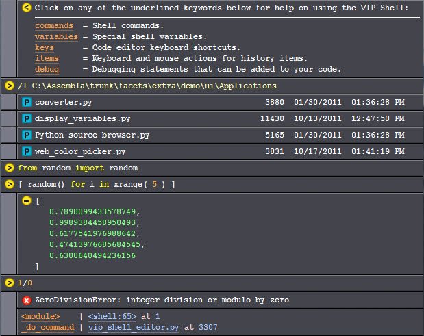
Light
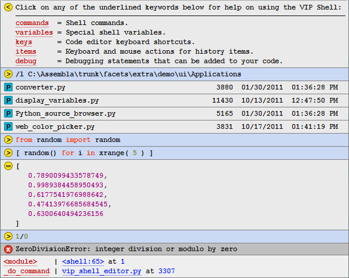
Pad: Black
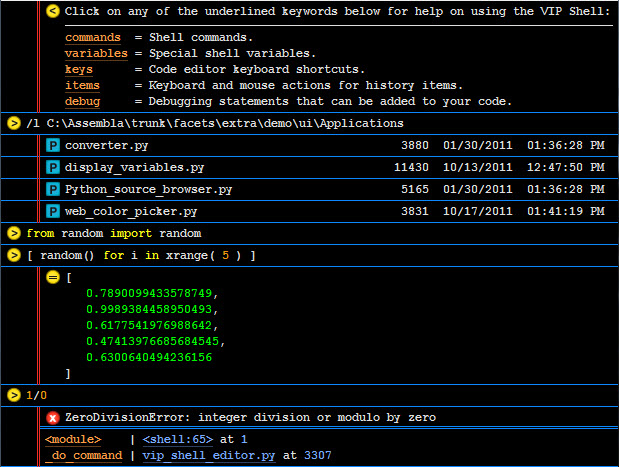
Pad: Grey
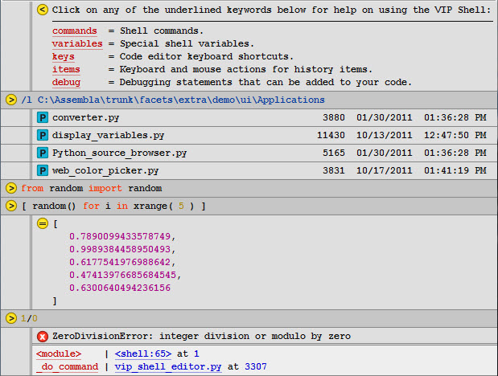
Pad: Legal
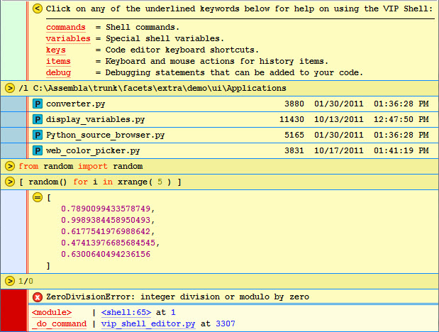
Pad: White
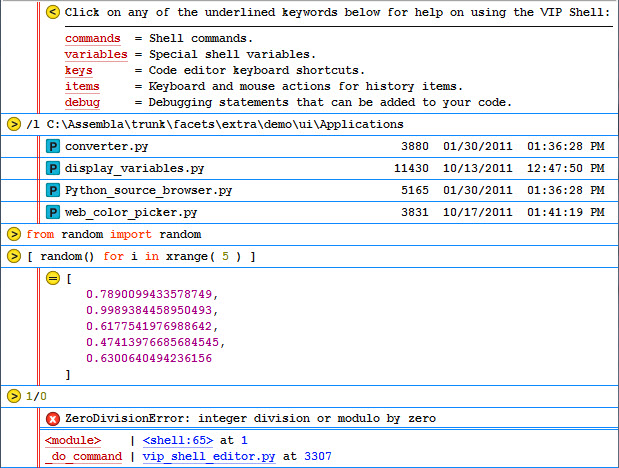
Pad: Yellow
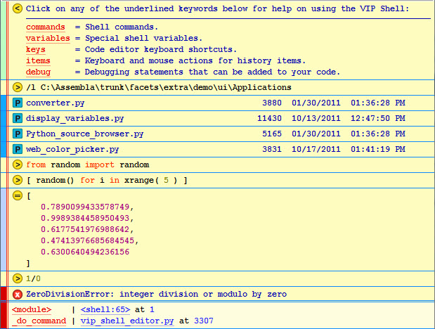
Rounded
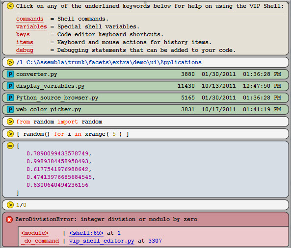
Shadow
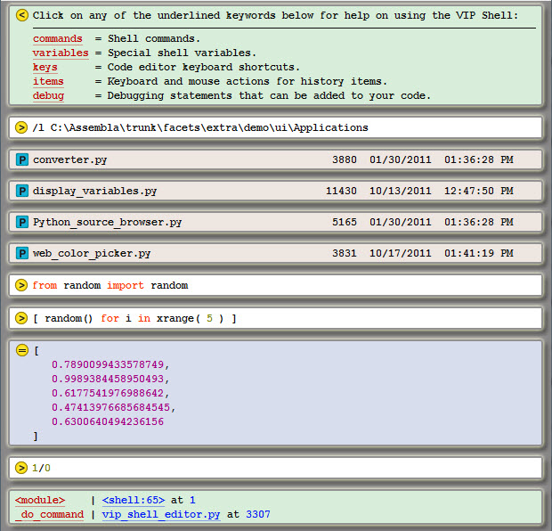
Simple Black
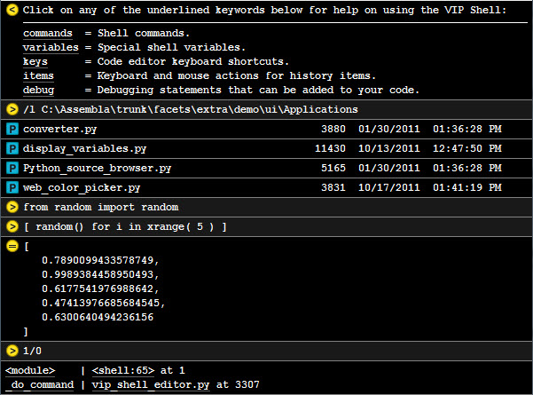
Simple White
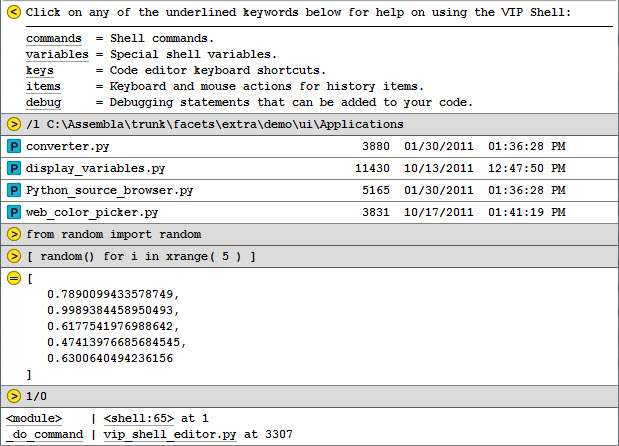
Smooth
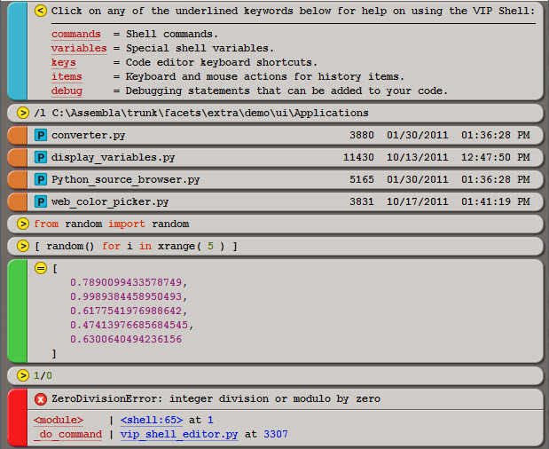